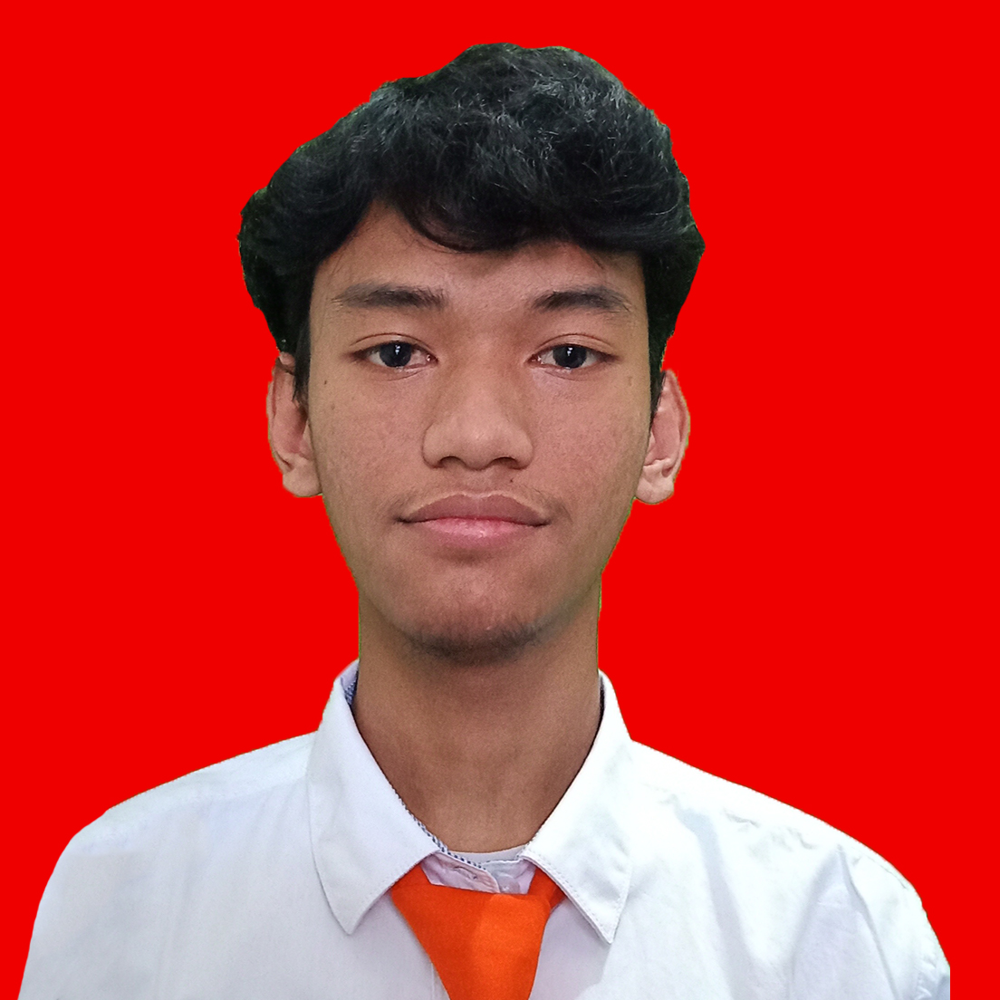

Ciptaagung Firjat Ardine

I am a Bachelor's degree active student in Informatics at the Computer Science Faculty of Universitas Pembangunan
Nasional "Veteran" Jawa Timur. I have an interest in the appearance of digital products, especially UI/UX Design and Front-End Development.
Education
AI & Cybersecurity Bootcamp - IBM SkillsBuild For AI & Cybersecurity Hacktiv8 (Feb 2024 - Present)
The Complete 2024 Web Development Bootcamp Dr. Angela Yu - Udemy.com (Jan 2024 - Present)
UI/UX Bootcamp - Skilvul #Tech4Impact Kampus Merdeka Cycle 5: UI/UX Design (Aug 2023 - Dec 2023)
Bachelor of Informatics - Universitas Pembangunan Nasional Veteran Jawa Timur (Aug 2021 - Present)
Organizational/Work Experience
Vice Chairman - UKM Veteran Esport UPNVJT
Feb 2024 - Present
Assist the chairman in coordinating work plans and organizational agendas.
Coordinate with the divisions that involve internal parties of the organization.
Represent and replace the chairman's duties when absent
Chief Committee - Dies Natalis AMN Surabaya Mobile Legends Cup
Nov 2023 - Nov 2023
Develop the event plan and Evaluate team performance.
Lead and Coordinate the entire event execution team.
Communicate with all stakeholders, including participants, sponsors, and vendors.
League Operations - PMCC ID 2023 UPNVJT
Nov 2023 - Nov 2023
Lead the Technical Meeting with participants
Lead the Flow of The Matches
Operate broadcasts of matches and event materials
UPNVJT MLBB A Team Manager - UKM Veteran Esport UPNVJT
May 2023 - Feb 2024
Organize training and competition schedules for athletes.
The Middleman of athletes and organizations
Manage athletes administration
League Operations - PMCC ID 2022 UPNVJT
Dec 2022 - Dec 2022
Lead the Technical Meeting with participants
Lead the Flow of The Matches
Operate broadcasts of matches and event materials
Skills
C++, Sql (Intermediate)
Figma (Advanced)
HTML, CSS, Javascript (Intermediate)
Photoshop (Beginner)
Premiere Pro, Capcut (Beginner)
Soft Skills : Team Work, Self Management (Advanced)
Awards & Certification
UI/UX Design Mastery (Gold) - Skilvul (Oct 2023 - Oct 2025)
Others
Copyright © Ciptaagung. All rights reserved.